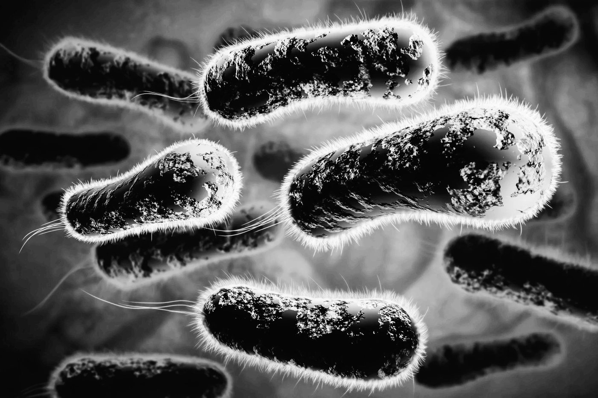

Protein, the Gut Microbiome, and Growth in Preterm Infants

Our new study published in The Journal of Nutrition explores how protein supplementation may interact with the developing gut microbiome and body composition of extremely preterm infants.
We analyzed 46 infants born at 25–28 weeks of gestation who received either standard human-milk fortification or additional protein supplementation. Stool samples were analyzed at 4 and 8 weeks, and body composition was measured at approximately 36 weeks postmenstrual age.
What did researchers find?
At four weeks, infants receiving additional protein had greater gut microbial diversity than those receiving standard fortification. However, this difference was no longer present at eight weeks. We did not find a significant overall difference in microbial community composition between the groups.
The study also found that greater microbial diversity at four weeks was associated with higher fat-free mass later in the neonatal period. Fat-free mass includes tissues such as muscle, bone, and organs.
Another notable finding involved Bacillus. Higher Bacillus abundance at four weeks was associated with lower fat-free mass and fat mass z-scores in our models.
Why does this matter?
Preterm infants undergo rapid development while receiving intensive medical care. Nutrition, human milk exposure, antibiotics, and other clinical factors can all influence growth and the developing microbiome.
This study suggests that these factors may be interconnected. However, it does not prove that protein supplementation changes the microbiome in a way that directly improves growth.
We emphasize that larger, multisite studies are needed to understand the relationship between nutrition, the microbiome, and body composition.
The takeaway
The developing gut microbiome may be an important part of the complex relationship between nutrition and growth in extremely preterm infants. Understanding that relationship could eventually help researchers develop better nutritional strategies—but more evidence is needed.
Read the full-text article here.